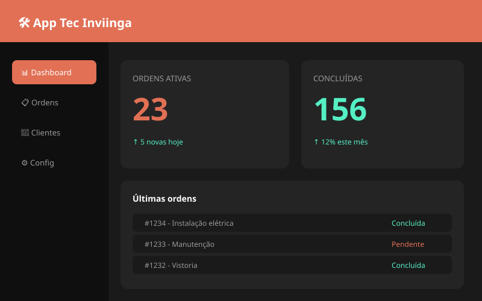
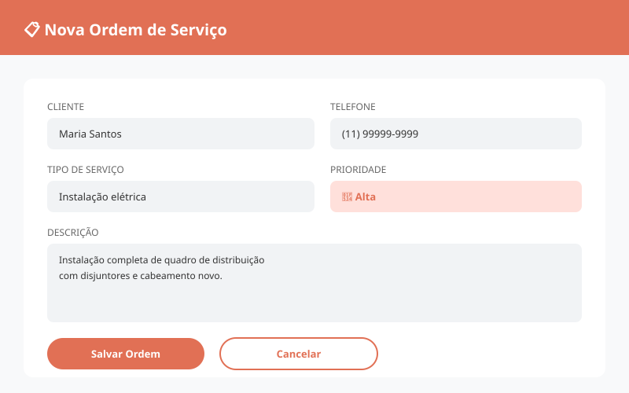

Sistema privado desenvolvido para uma empresa de manutenção, com o objetivo de otimizar a abertura e o gerenciamento de Ordens de Serviço (O.S) emitidas para técnicos terceirizados que prestam serviços diários.
O App Tec Inviinga é um sistema de uso interno criado para atender uma empresa de manutenção que trabalha com técnicos terceirizados. A ferramenta centraliza a abertura de O.S, o acompanhamento das ordens em campo e o histórico de serviços executados.
Por ser um sistema privado, o acesso é restrito aos colaboradores e técnicos autorizados pela empresa contratante.
Este sistema é utilizado exclusivamente por uma empresa de manutenção, que gerencia uma equipe de técnicos terceirizados responsáveis por atendimentos diários. O App Tec Inviinga substitui processos manuais e planilhas, tornando a operação mais rápida, organizada e rastreável.
🔒 Por se tratar de um sistema corporativo privado, o conteúdo interno e os dados dos clientes não são divulgados publicamente.
Veja algumas das telas e funcionalidades do App Tec Inviinga

Visão geral de ordens ativas, concluídas e métricas do dia a dia da operação.

Formulário completo para abertura de O.S com definição de prioridade e descrição do serviço.
Sistemas privados sob medida para empresas que gerenciam equipes e ordens de serviço.